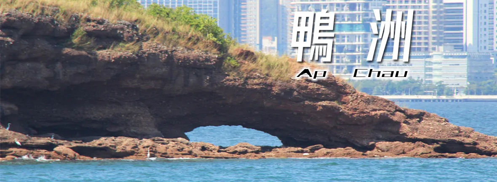

長洲關公忠義亭是一所關帝廟，位於長洲南部的山上。亭兩旁種植了數棵台灣山櫻花樹，每年大約三月上旬櫻花樹便會開花，而且吸引不少來賞花的人潮。

鴨洲又名「大鴨洲」，位於沙頭角以東及吉澳以西的一個島嶼，被納入為中國香港世界地質公園之一。全島只有0.016平方公里，由於其外形像一隻半浮於水面的鴨子而命名。鄰近的細鴨洲、鴨螺春及白墩排均屬於鴨洲的附屬島嶼。
坪洲是香港的一個離島，位於港島西面，總面積為0.99平方公里，只有長洲面積的三分之一。全島的最高點為手指山，只有海拔95米高。坪洲設有家樂徑及坪愉徑，可供遊人環島遊覽。